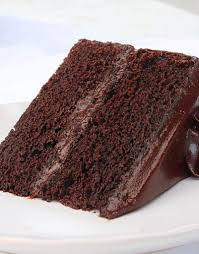

Chocolate Cake

About the cake
This homemade chocolate cake recipe is super easy to prepare in one bowl for a deliciously moist and fluffy chocolate cake. This is the best chocolate cake I have ever had!
Skip the store-bought mix and make this one-bowl chocolate cake from scratch. It's almost as easy as the boxed stuff, but it's so much more delicious. The Allrecipes community agrees: You don't want to miss this simple chocolate cake recipe.
Ingrediants
- All Purpose Flour
- Cocoa Powder
- Instant Coffee
- Salt
- Baking Soda
- Baking Powder
- Vanilla Extracat
- Eggs
- Buttermilk
Steps
- Whisk the dry ingrediants together in a container and wet in another except coffe and hot water.
- Pour the wet mixture to the dry one and mix it together.
- Add instant coffe to hot water and add it to the mixture.
- Pour the batter in a container and bake in an oven is around 25-35 minutes at a temperature of 350°F (180°C).